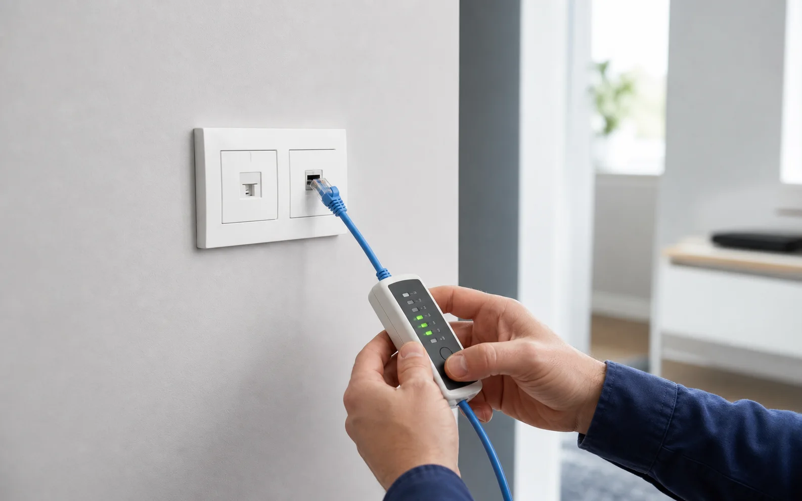

Akutproblem
LAN-Dose funktioniert nicht?
Kein Internet aus der Netzwerkdose? Beratung & Technik prüft Netzwerkdosen, Patchpanel, Router, Switch und Verkabelung im Datenbereich. Ziel ist eine klare Zuordnung und eine funktionierende Verbindung.

Prüfen statt raten
Dose, Patchfeld und Switch müssen zusammenpassen.
Eine LAN-Dose funktioniert erst, wenn Leitung, Portzuordnung, Patchpanel, Switch und Router logisch verbunden und getestet sind.
Mögliche Ursachen.
Nicht gepatcht
Die Dose ist im Schrank vorhanden, aber nicht mit Switch oder Router verbunden.
Falsch zugeordnet
Beschriftung fehlt oder stimmt nicht. Der Port im Raum passt nicht zum Patchfeld.
Technischer Fehler
Kabel, Stecker, Dose, Patchkabel oder Switch-Port können fehlerhaft sein.
Was wir prüfen.
- Dose im Raum
- Patchpanel oder Verteiler
- Switch und Routerport
- Patchkabel
- Zuordnung und Beschriftung
Der passende Einstieg
Wenn mehrere Anschlüsse oder die gesamte Netzstruktur unklar sind, ist der Heimnetz-Check sinnvoll. Sie erhalten danach einen Bericht und bei Bedarf ein Angebot für Netzwerk-Erweiterung inklusive Dokumentation.
Netzwerkdose aktivieren lassen.
Beschreiben Sie kurz, wie viele Dosen betroffen sind und ob ein Netzwerkschrank vorhanden ist.
Anliegen kostenlos einschätzen lassen